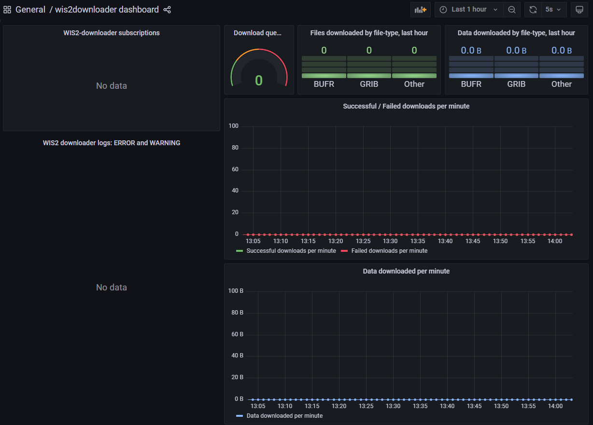

从WIS2下载和解码数据
学习目标!
完成本实践课程后，您将能够：
- 使用"wis2downloader"订阅WIS2数据通知并将数据下载到本地系统
- 在Grafana仪表板中查看下载状态
- 使用"decode-bufr-jupyter"容器解码已下载的数据
简介
在本课程中，您将学习如何设置对WIS2 Broker的订阅，并使用wis2box中包含的"wis2downloader"服务自动将数据下载到本地系统。
关于wis2downloader
wis2downloader也可作为独立服务使用，可以在不同于发布WIS2通知的系统上运行。有关将wis2downloader作为独立服务使用的更多信息，请参见wis2downloader。
如果您想开发自己的服务来订阅WIS2通知和下载数据，可以使用wis2downloader源代码作为参考。
访问wis2数据的其他工具
以下工具也可用于发现和访问WIS2中的数据：
- pywiscat提供WIS2全球发现目录的搜索功能，支持WIS2目录及其相关发现元数据的报告和分析
- pywis-pubsub提供从WIS2基础设施服务订阅和下载WMO数据的功能
准备工作
开始之前，请登录到您的学生虚拟机并确保您的wis2box实例正在运行。
在Grafana中查看wis2downloader仪表板
打开网络浏览器，通过访问http://YOUR-HOST:3000导航到您的wis2box实例的Grafana仪表板。
点击左侧菜单中的仪表板，然后选择wis2downloader仪表板。
您应该看到以下仪表板：

此仪表板基于wis2downloader服务发布的指标，将显示当前正在进行的下载状态。
在左上角，您可以看到当前活动的订阅。
保持此仪表板打开，因为您将在下一个练习中使用它来监控下载进度。
检查wis2downloader配置
wis2box-stack启动的wis2downloader服务可以使用wis2box.env文件中定义的环境变量进行配置。
wis2downloader使用以下环境变量：
- DOWNLOAD_BROKER_HOST：要连接的MQTT代理的主机名。默认为globalbroker.meteo.fr
- DOWNLOAD_BROKER_PORT：要连接的MQTT代理的端口。默认为443（用于websockets的HTTPS）
- DOWNLOAD_BROKER_USERNAME：用于连接MQTT代理的用户名。默认为everyone
- DOWNLOAD_BROKER_PASSWORD：用于连接MQTT代理的密码。默认为everyone
- DOWNLOAD_BROKER_TRANSPORT：websockets或tcp，用于连接MQTT代理的传输机制。默认为websockets
- DOWNLOAD_RETENTION_PERIOD_HOURS：下载数据的保留期（小时）。默认为24
- DOWNLOAD_WORKERS：要使用的下载工作进程数。默认为8。决定并行下载的数量
- DOWNLOAD_MIN_FREE_SPACE_GB：托管下载的卷上要保持的最小可用空间（GB）。默认为1
要查看wis2downloader的当前配置，可以使用以下命令：
cat ~/wis2box/wis2box.env | grep DOWNLOAD
检查wis2downloader的配置
wis2downloader连接的默认MQTT代理是什么？
下载数据的默认保留期是多少？
点击显示答案
wis2downloader连接的默认MQTT代理是globalbroker.meteo.fr。
下载数据的默认保留期是24小时。
更新wis2downloader的配置
要更新wis2downloader的配置，您可以编辑wis2box.env文件。要应用更改，您可以重新运行wis2box-stack的启动命令：
python3 wis2box-ctl.py start
您将看到wis2downloader服务使用新配置重新启动。
对于本练习，您可以保持默认配置。
[继续翻译...]